CS184/284A Fall 2026 Homework 3 Write-Up
Names: Jason Wang
Link to webpage:
https://cal-cs184-student.github.io/hw3-jw-writeup/
Link to GitHub repository:
https://github.com/cal-cs184-student/hw3-jw.git
Part 1: Ray Generation and Scene Intersection
What the ray generation pipeline does is allow us to map the 2D pixels from the screen to the 3D rays in a visual scene. It first takes the 2D image coordinates and maps
them to a 1 by 1 square space. This is then mapped to the camera's virtual sensor plane, which sits above the plane, looking down at the z axis. This image is
scaled by the camera's field of view. We then draw a vector from the camera to one of the coordinate points, multiplying it
by the camera-to-world rotation matrix to properly orient it. Finally, construct a ray object with the camera's position as the origin, using that vector's direction,
and adjusting based on the camera's clipping boundaries. This is repeated for every coordinate of the original image.
Once a ray is made, it is tested against the geometry in the scene to find its closest hit. When the ray hits a primitive object, it is checked for whether
the intersection time t falls within a ray's valid boundaries. If it is, we update the max of that boundaries, optimizing our calculations so that
later primitive hits are only calculated if they are closer to the camera (hits an object at a lower intersection time t). Lastly, we make an Intersection struct
that holds the data we used like shading data, the t value, the interpolated surface normal, and a pointer to the primitive's material (BDSF).
For the triangle intersection algorithm, it uses the Moller-Trumbore algorithm, which allows us to bypass the need to calculate a triangle's plane equation.
The algorithm equates the parametric ray equation with the barycentric equation of a triangle. Converting this into a system of linear equations allows it to use Cramer's rule
to solve for the intersection distance and the barycentric coordinates.
After those calculations, a hit is passed through two checks. First, the t must be within the ray's valid bounds (same as the previously mentioned bounds).
Second, the barycentric coordinates must say that the hit occured in the triangle (coordinates are all between 0 and 1). If the hit
passes those checks, the barycentric coordinates are used to interpolate the normals of the three vertices, making the normals we need for shaders.
Some small sample images:
|
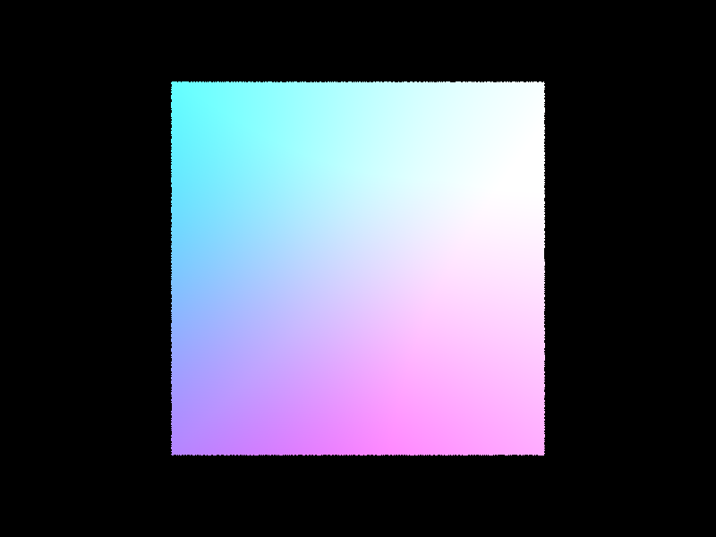
|
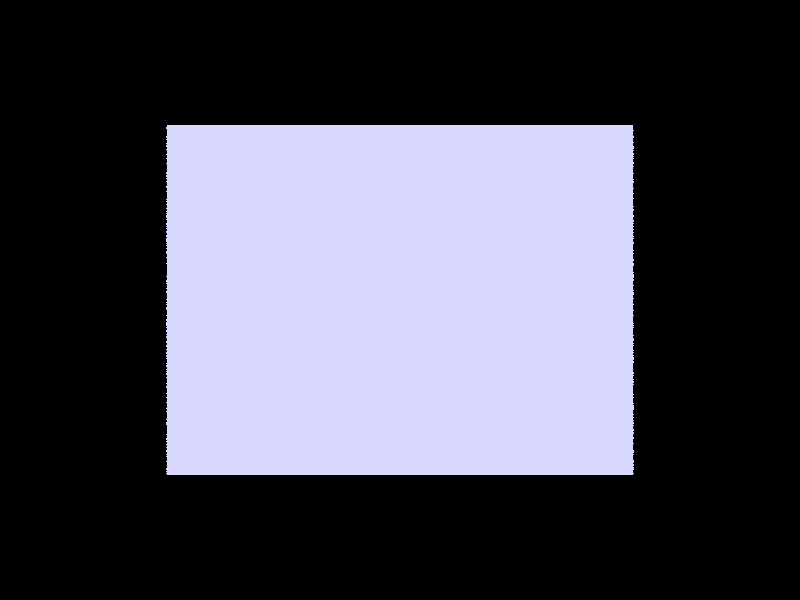
|
Part 2: Bounding Volume Hierarchy
The BVH algorithm uses a recursive approach to build a tree of boundary boxes. It starts with a set of primitives, a start and end interator. The
algorithm interates through this to make a singular large box, which includes all the smaller ones inside it. It also makes a box that only contains the smaller
boxes' centers. It then checks the number of elements inside the big box is within the maximum leaf size. If so, the recursion stops.
However, if there are more elements than the maximum leaf size, we must split them into more boxes. This algorithm chooses to split elements using the longest length through
the bounding box. It finds the average center of the smaller center, and places it on that length. Then the boxes are split left and right of that average.
Should a half somehow not contain any boxes, we just divide the elements in half using their index.
Finally, after the plit is completed, a new BVH node is made for the new elements, and the recursion continues.
Essentially, this BVH algorithm is an optimization technique, allowing us to much more quickly determine the visible parts of the scene for
faster render times.
Some much more detailed sample images that used BVH acceleration:
|
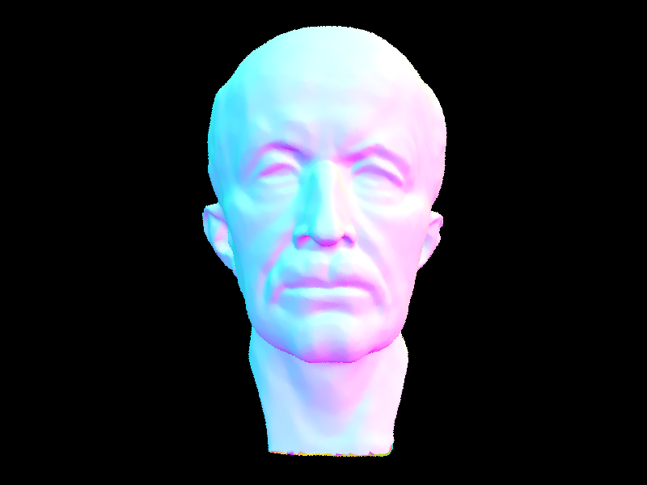
|
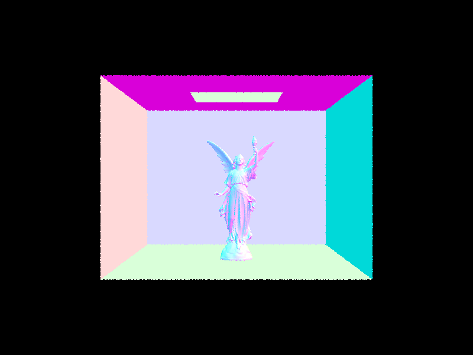
|
The performace of this optimization was tested on a moderately detailed image, compared with and without the BVH algorithm. Without the algorithm, the
path tracer had to evaluate every ray against every element in the image, resulting in a slow O(N) rendering time. THe average speed was 0.0167 million rays per second.
However, with BVH acceleration the renderer could prune lots of invisible elements, reducing the expected runtime to O(log N). The average speed was 6.0529 million rays per second, an almost 400x speedup.
Part 3: Direct Illumination
To determine how much color an object is given, we need to know how much light there is. However, calculating the light coming from every direction
for a point on an object is simply impossible. Therefore we do a trick, shooting some rays and averaging the results.
One method is called Uniform Hemisphere Sampling. It picks random directions uniformly across the entire 180 degree hemisphere around an object's point. The number of
samples is determined by the number of light sources multiplied by a set parameter. Inside a loop, one of those directions is chosen and normalized into world space.
A ray is made from the intersection point between this vector and the surface. If this ray hit another object, the algorithm retrieves the emissive radiance
of the object. This emissive radiance value is multiplies by the surface's BSDF and the cosine of the angle of incidence, then divided by a probability density function. Finally,
it sums the radiances of all the rays and averages them.
However, this method can run into issues, particularly if there is only one small light source. Many of the rays will return 0 light, while the few that
are in line with the light source returns a huge amount of light. This can cause a lot of noise in an image, only really solved by having a ton of light sources.
Another method is called Importance Sampling. This one looks at the light emitting objects in the scene and starts from there. For each sample from a light,
it retrieves the light's data, such as the incoming radiance, world-space direction to the light, distance to the light, and the light's probability density function.
The algorithm first checks the incoming light direction to see if the light could hit the surface. It then makes a shadow ray from the surface to the light. The BVH
tree is checked to see if the shadow ray contacts the light source. After confirming, the same process as above occurs, multiplying radiance with BSDF, cosine, and averaging.
Comparison between Uniform Hemisphere and Importance Sampling:
|
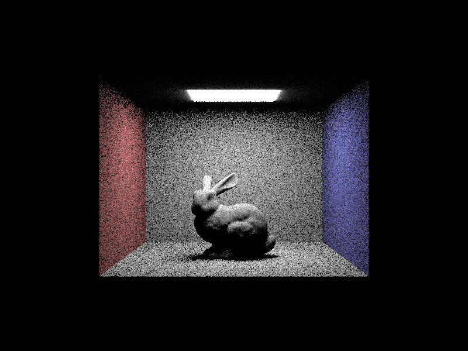
Uniform Hemisphere
|
Importance
|
Notice the reduced noise on the Importance sampling image. This is because of the reason identified earlier, how Uniform Hemisphere
Sampling can very easily introduce a lot of noise.
Comparison between images with increasing amounts of light sources:
|
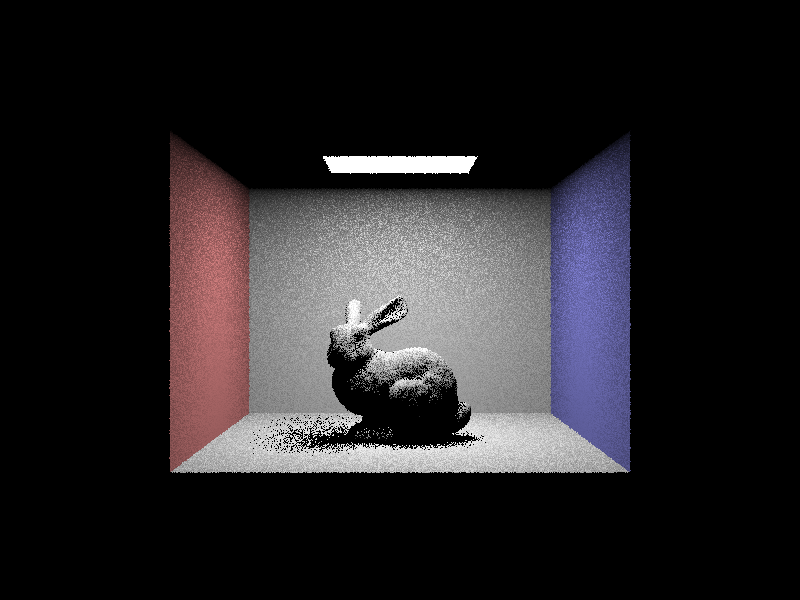
One light source
|
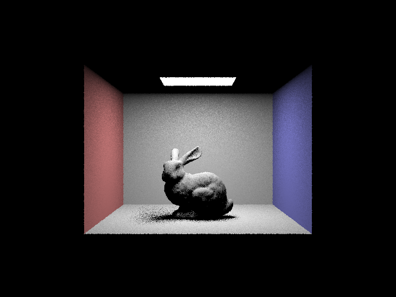
Four light sources
|
|
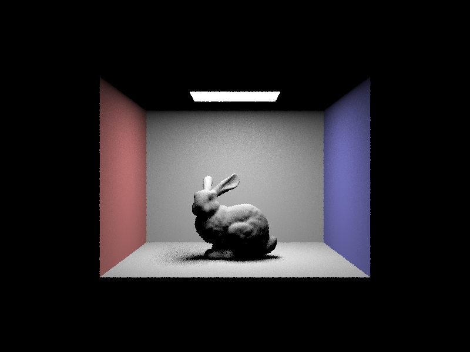
Sixteen light sources
|
Sixty four light sources
|
Notice the reduced noise the more light sources there are
Part 4: Global Illumination
Global illumination is achieved through simulating light not just hitting one surface, but bouncing off and hitting others. First, our algorithm starts by
doing the steps for one light bounce, one ray. Before casting another ray for the next bounce, the algorithm checks if it should terminate. Our
computing power is finite, and we obviously can't simulate infinite light bounces. Therefore we use a combination of checking if the ray has reached its final allowed depth
or with a random selection, choosing a 70% chance of continuing. This saves us time on not computing rays that have a much more negligible effect on lighting.
If the ray survives these checks, the algorithm asks the surface material for a new random direction to bounce toward, using the material's reflectance and
probability density functions. This new ray has its depth decremented, and the entire process of intersection calculations, light averaging, and new rays repeats.
One note here is that depending on the object scenery and built in flags, the light summation that the ray creates can sometimes be added to other ray iterations (a direct lighting hit),
or it could be its own standalone light source.
A normal render with global illumination:
Images with Direct and Indirect illumination only:
|
Direct
|
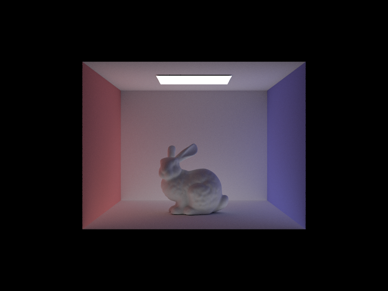
Indirect
|
Showing the individual stages of light bounces:
|
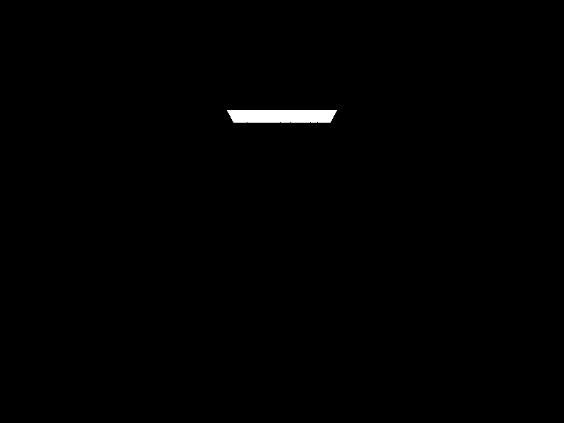
Zero bounces
|
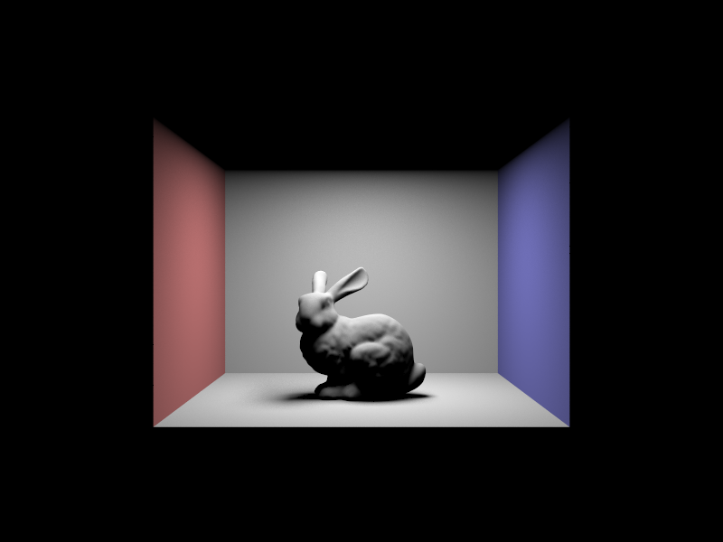
One bounce
|
|
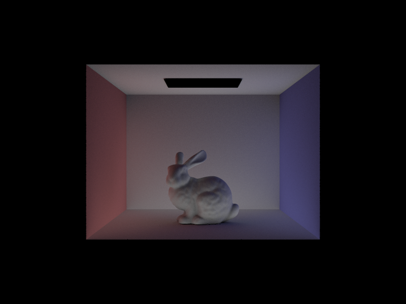
Two bounces
|
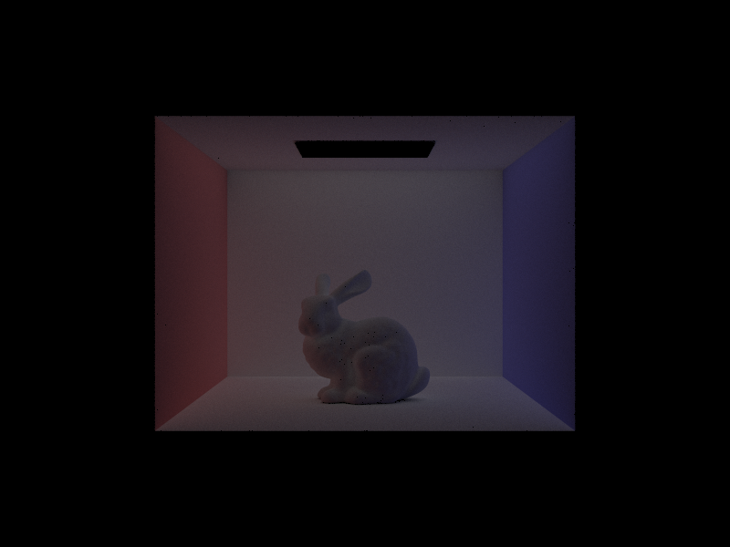
Three bounces
|
|
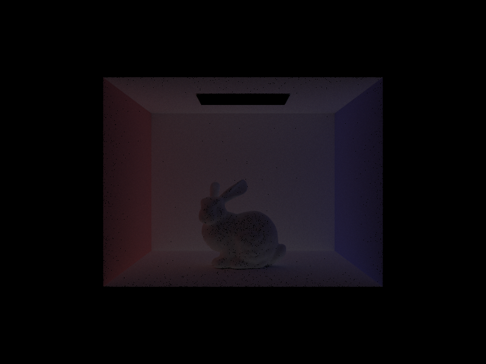
Four bounces
|
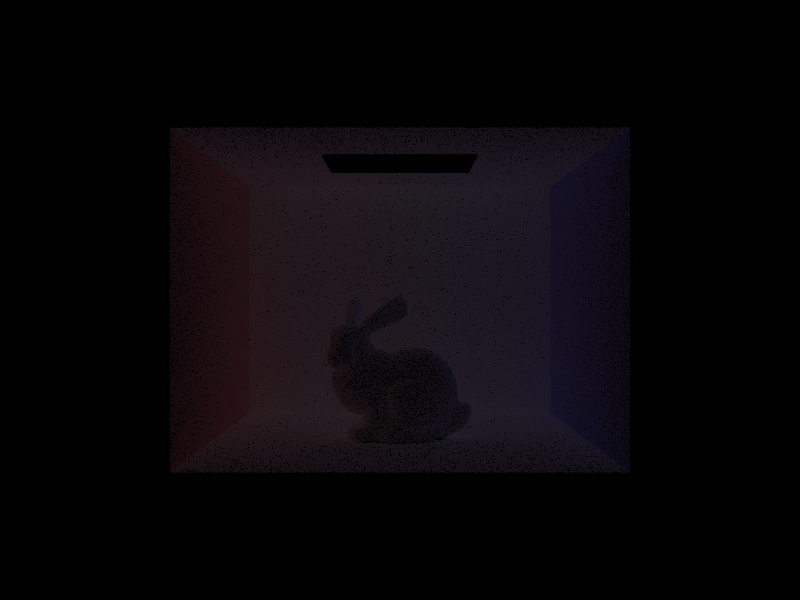
Five bounces
|
Showing the accumulating stages of light bounces:
|
Zero bounces
|
One bounce
|
|
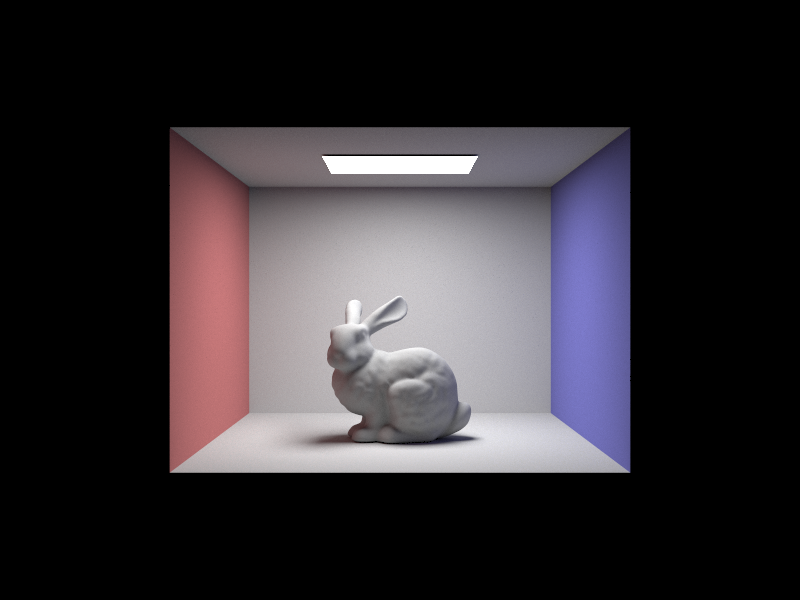
Two bounces
|
Three bounces
|
|
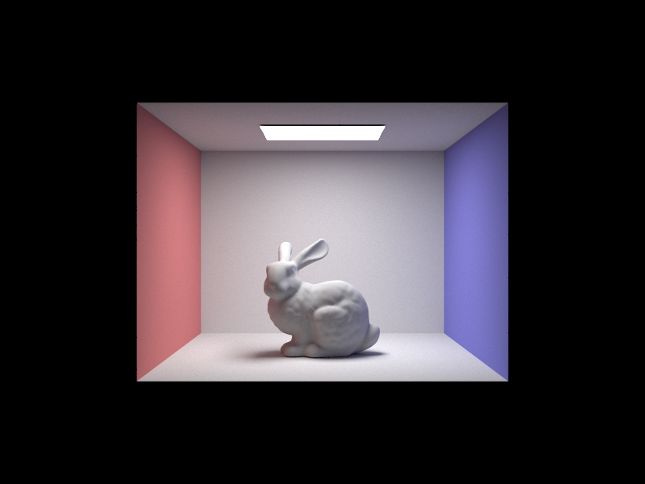
Four bounces
|
Five+ bounces
|
Notice how additional bounces allows for colors to bleed and smooth onto surfaces that typical rasterization wouldn't be able to capture. Especially in the second and third bounces, where we can start to see the colored walls shine onto other walls.
Showing different sample-per-pixel rates:
|
1 sample-per-pixel
|
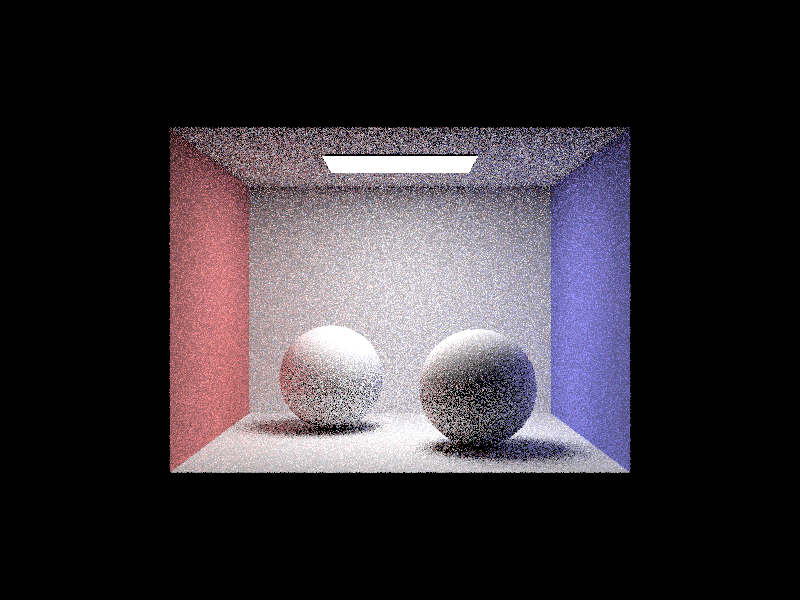
2 sample-per-pixel
|
|
4 sample-per-pixel
|
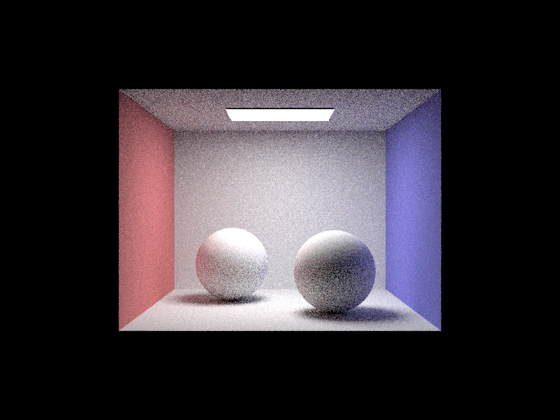
8 sample-per-pixel
|
|
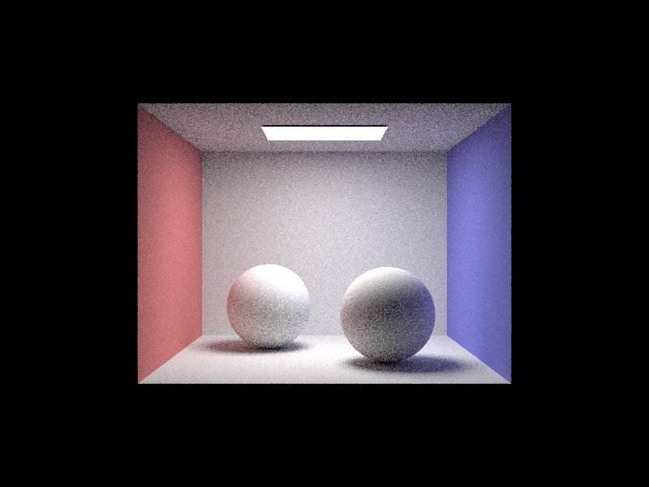
16 sample-per-pixel
|
64 sample-per-pixel
|
|
1024 sample-per-pixel
|
Part 5: Adaptive Sampling
In the standard pixel sampling, every pixel is evaluated with a fixed number of samples. This is inefficent because certain parts of an image
are already rather uniform, meaning that their sampling isn't as required as other areas of the image. Adaptive sampling addresses this by
statistically monitoring the convergence of each pixel. By calculating the mean and standard deviation of the incoming light samples, we cam
make a confidence interval telling the renderer whether the sampled color is close enough to its true color.
For the actual code changes, it requires tracking variables for the sum and the sum of the squared illuminances of all rays for a pixel.
For every sample ray, we extract the illuminance scalar. We calculate the mean and standard deviation in set batches and uses those
to create a confidence interval. We then check if the interval is within our set tolerance multiplied by the mean. If so, the pixel is considered
converged, and our adaptive sampling stops.
Images along with their sampling rate images. Red indicates a high number of samples, while blue indicates a low number of samples.
|
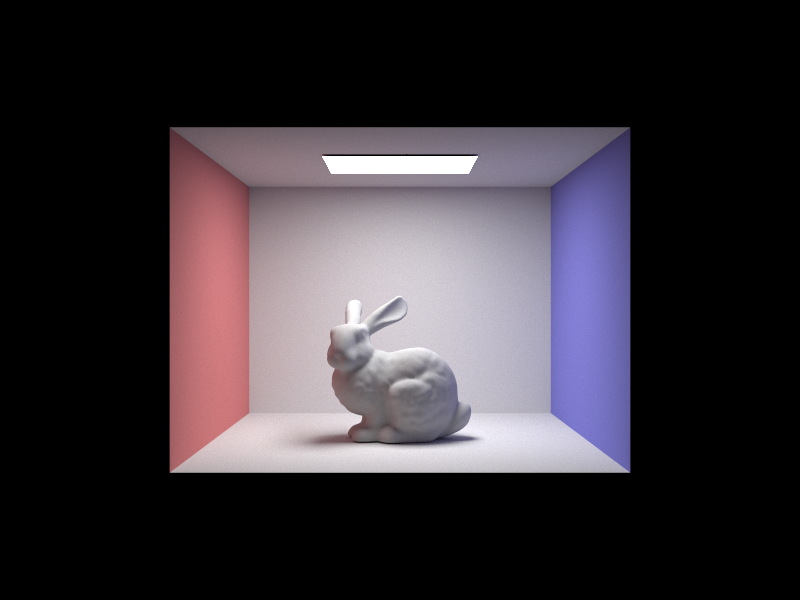
|
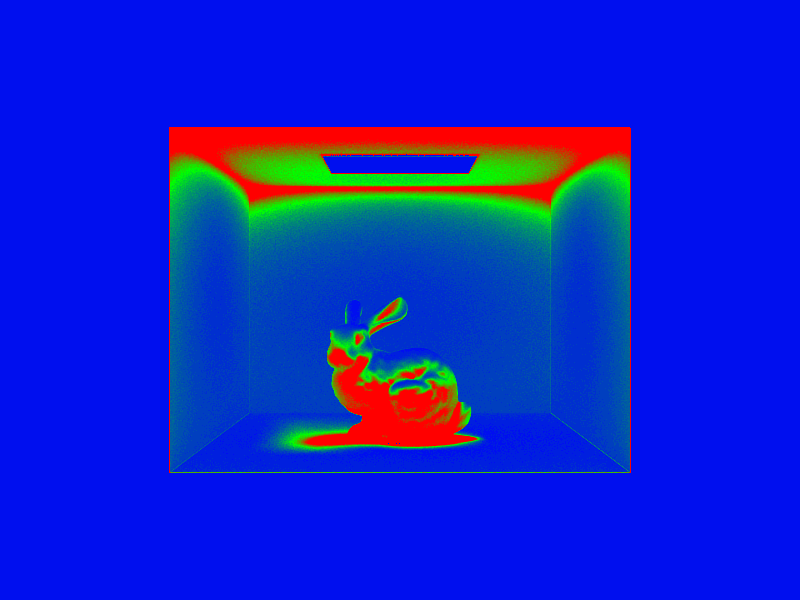
|
|
|
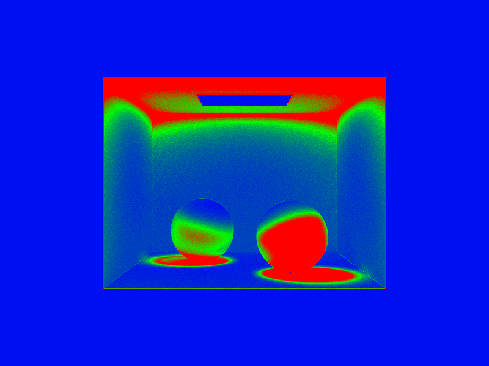
|